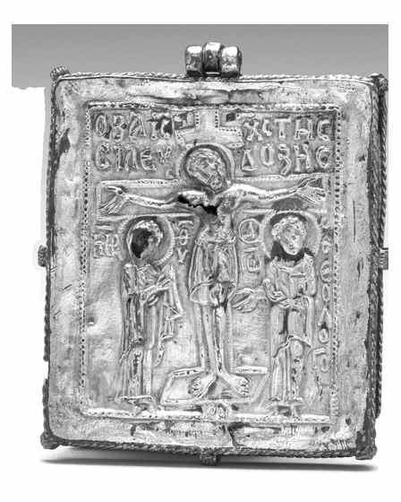
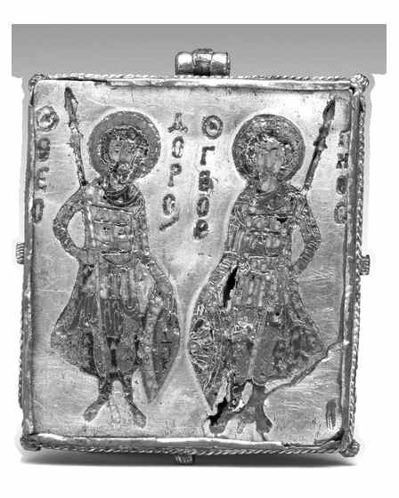

Catalog › CE-0272 · CLE2026-1972.94
Enkolpion din argint aurit și email cloisonné cu Răstignirea și sfinții Teodor și Gheorghe, Cleveland
1080–1120 (1080–1120) · loc necunoscut · The Cleveland Museum of Art, Cleveland (Ohio), Statele Unite, inv. 1972.94 (valvele: 1972.94.a și 1972.94.b)
medieval cross, argint; 1080–1120 (1080–1120); find spot unknown; kept at The Cleveland Museum of Art, Cleveland (Ohio), Statele Unite.




Identificare
- Categorie
- Altele
- Material
- Argint
- Tehnică
- Aurire; Email
- Dimensiuni
- Î 51 × L 41 mm
Iconografie
- Descriere avers
- Răstignirea (titlul din sursă: „Crucifixion (front)”).
- Revers
- Sfinți militari
- Descriere revers
- Sfinții Teodor și Gheorghe (titlul din sursă: „Saints Theodore and George (back)”).
Datare și atribuire
- Datare
- 1080–1120 (1080–1120)
- Centru
- Constantinopol
Descoperire
- Context
- Colecție (fără context)
- Coordonate
- 41.5089° N, -81.6119° E
- Precizia locului
- Loc de păstrare (loc de descoperire incert)
Păstrare și referințe
- Colecție
- The Cleveland Museum of Art, Cleveland (Ohio), Statele Unite
- Nr. inventar
- 1972.94 (valvele: 1972.94.a și 1972.94.b)
- Bibliografie
- The Cleveland Museum of Art, Open Access, Enkolpion with the Crucifixion (front) and Saints Theodore and George (back), 1972.94, https://clevelandart.org/art/1972.94 (CC0; accesat 17.10.2026). Citări indicate de muzeu: S. E. Lee, „The Year in Review for 1972”, Bulletin of the Cleveland Museum of Art 60, nr. 3 (1973), p. 108, cat. 83, repr. p. 68; H. C. Evans, W. D. Wixom, The Glory of Byzantium, New York, 1997, cat. 111, p. 164; B. Pitarakis, A silver enkolpion from Palaiologan Constantinople in context, Ankara, 2010.
- Observații
- Datare și centru după muzeu: Bizanț, Constantinopol, 1080–1120. Enkolpion dreptunghiular în formă de iconiță, din două valve, nu cruce. Material, tehnică și dimensiuni după muzeu: argint aurit și email cloisonné, 5,1 × 4,1 cm. Proveniență după muzeu: Safani Gallery, New York, apoi achiziție 1972 (Fondul J. H. Wade). Locul descoperirii nu e cunoscut cu precizie; punctul de pe hartă marchează locul de păstrare (The Cleveland Museum of Art), nu locul descoperirii. Coordonate: nu sunt date în sursă.
Citare: Corpus Encolpiorum, CE-0272, Enkolpion din argint aurit și email cloisonné cu Răstignirea și sfinții Teodor și Gheorghe, Cleveland, --root/piese/CLE2026-1972.94/ (accesat 2026-10-17).